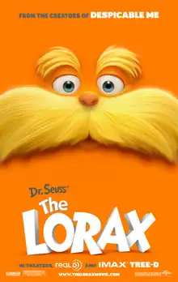

The Lorax (film)
| The Lorax | |
|---|---|
 Theatrical release poster | |
| Directed by | Chris Renaud |
| Screenplay by | Cinco Paul Ken Daurio |
| Based on | The Lorax by Dr. Seuss |
| Produced by | |
| Starring | |
| Edited by |
|
| Music by | John Powell[1] |
Production companies | |
| Distributed by | Universal Pictures |
Release dates |
|
Running time | 86 minutes[3] |
| Country | United States |
| Language | English |
| Budget | $70 million[4] |
| Box office | $351.4 million[4][5] |
The Lorax (also known as Dr. Seuss' The Lorax) is a 2012 American animated musical fantasy comedy film produced by Universal Pictures and Illumination Entertainment, and distributed by Universal. The film is the second screen adaptation of Dr. Seuss' 1971 children's book The Lorax following the 1972 animated television special. Directed by Chris Renaud, co-directed by Kyle Balda, produced by Chris Meledandri and Janet Healy and written by the writing team of Cinco Paul and Ken Daurio (who also served as executive producers alongside Dr. Seuss' widow Audrey Geisel), it stars the voices of Danny DeVito, Ed Helms, Zac Efron, Taylor Swift, Rob Riggle, Jenny Slate and Betty White.
The film builds on the book by expanding the story of the Lorax and Ted, the previously unnamed boy who visits the Once-ler, and provides an extended ending. The idea for the film was initiated by Geisel, who had an established partnership with Meledandri from a collaboration on Horton Hears a Who! (2008). Geisel approached Meledandri with the idea when he launched Illumination. The film was officially announced in 2009 with the creative team attached, and by 2010, DeVito was cast as the titular character. John Powell composed the score, and also wrote the film's songs alongside Paul. The animation was produced in France by the studio Illumination Mac Guff (the animation department of Mac Guff that was acquired by Illumination in 2011).
The Lorax globally premiered at Universal Studios in Hollywood on February 19, 2012, and was theatrically released in the United States on March 2, in IMAX, 3D (known in the film exclusively as "Tree-D") and 2D. The film received mixed reviews from critics who praised the animation, music and voice acting but criticized the characters and story, while the marketing received backlash for its perceived contradictions to the book's original message. Despite these criticisms, The Lorax was a commercial success, grossing $351 million worldwide against a budget of $70 million.[4]
Plot
Twelve-year-old Ted Wiggins lives in Thneedville, a walled city where all vegetation is artificial. Ted's love interest, Audrey, longs to see a real tree, and Ted undertakes to find her one. His grandmother, Norma, tells him about a reclusive man known as the "Once-ler", who is said to know what happened to the trees. Ted leaves Thneedville and discovers that the land outside of his home town is a barren, contaminated wasteland. He finds the Once-ler, who agrees to tell Ted the story of the trees over multiple visits. The next time he tries to leave town, Ted encounters Thneedville's greedy mayor, Aloysius O'Hare, whose company sells the bottled air that is the town’s only source of fresh oxygen. Explaining that trees and the oxygen they produce pose a threat to his business, O'Hare tries to intimidate Ted into staying in town, but Ted continues to visit the Once-ler.
The Once-ler recounts how, as a young inventor, he arrived in a lush forest of Truffula trees. After chopping down a Truffula to create a knitted garment known as a Thneed, he was confronted by the Lorax, the self-proclaimed "guardian of the forest". The Lorax made him promise not to cut down any more trees. The Once-ler harvested the Truffula tufts in a sustainable manner until his unscrupulous relatives arrived to help him with his business and convinced him to resume cutting down trees, which led to large profits, but also deforestation and pollution. After the last tree was cut down, the Once-ler's business plummetted, his family abandoned him, all the animals left, and the Lorax vanished into the sky, leaving behind a stone platform etched with the word "Unless".
The Once-ler gives Ted the last Truffula seed and urges him to plant it. Ted returns home, but is spotted by O'Hare's city-wide surveillance system. Enlisting the help of Audrey and his family, Ted takes the seed to the center of town. O'Hare rallies the citizens against Ted, saying trees are dangerous and filthy. Ted uses a bulldozer to knock down a section of the city wall, revealing the environmental desolation outside. Inspired by Ted's conviction, the crowd turns on O'Hare as his bodyguards Morty and McGuirk launch him away on jet helmet. The seed is finally planted.
As time passes, the land begins to recover and the Lorax reunites with the Once-ler.
Voice cast
- Danny DeVito as the Lorax, a mystical orange furry humanoid creature with a yellow moustache, who is both the guardian of the truffula forest and acts as a voice of reason.[6] DeVito additionally provided the voice of the Lorax in the Italian, Latin and Castilian Spanish, German, and Russian dubs of the film.[7][8]
- Ed Helms as the Once-ler, a reclusive old man and former inventor[6]
- Zac Efron as Ted Wiggins, an idealistic 12-year-old boy.[9][10] He is named after the author of the book, Dr. Seuss (Theodor Geisel).[11]
- Taylor Swift as Audrey, Ted's love interest.[1] She is named after Audrey Geisel, Dr. Seuss' wife.[11]
- Rob Riggle as Aloysius O'Hare, the diminutive and greedy mayor of Thneedville and head of the O'Hare Air company that supplies fresh air to Thneedville residents[6]
- Jenny Slate as Mrs. Wiggins, Ted's neurotic mother and Grammy Norma's daughter[12]
- Betty White as Grammy Norma Wiggins, Ted's wise-cracking grandmother and Mrs. Wiggins's mother[1]
- Nasim Pedrad as Isabella, the Once-ler's mother
- Stephen Tobolowsky as Uncle Ubb, the Once-ler's uncle
- Elmarie Wendel as Aunt Grizelda, the Once-ler's aunt. This was Wendel's final film role before her death on July 21, 2018.
- Danny Cooksey as Brett and Chet, the Once-ler's dim-witted twin brothers
- Joel Swetow as the 1st Marketing Guy
- Michael Beattie as the 2nd Marketing Guy
- Dave B. Mitchell as the 1st Commercial Guy
- Dempsey Pappion as the 2nd Commercial Guy
- Chris Renaud as assorted forest animals
Production
The Lorax is the fourth feature film based on a book by Dr. Seuss, the second fully computer-animated adaptation (the first one being Horton Hears a Who! in 2008), and the first to be released in 3D. The Lorax was also Illumination Entertainment's first film presented in IMAX 3D (known as "IMAX Tree-D" in publicity for the film).[13] The idea for the film was initiated by Audrey Geisel, Dr. Seuss's widow, who had an established partnership with producer Chris Meledandri from a collaboration on Horton Hears a Who!. Geisel approached Meledandri when he launched Illumination, saying "This is the one I want to do next".[14] The film was officially announced in July 2009, with Meledandri attached as the producer and Geisel as the executive producer. Chris Renaud and Kyle Balda were announced as the director and co-director of the film, while Cinco Paul and Ken Daurio, the duo who wrote the script for Horton Hears a Who! and Illumination's previous films, were set to write the screenplay.[15] In 2010, Danny DeVito was cast as the voice of the Lorax.[16]
The film was fully produced at the French studio Illumination Mac Guff, which was the animation department of Mac Guff, acquired by Illumination Entertainment in the summer of 2011.[17] DeVito reprised his role in five different languages, including the original English audio, and also for the Russian, German, Italian, Catalan/Valencian, Castillan Spanish and Latin Spanish dub editions, learning his lines phonetically.[18] Universal added an environmental message to the film's website after a fourth-grade class in Brookline, Massachusetts, launched a successful petition through Change.org.[19]
Release
The film was released on March 2, 2012, in the United States and Canada, and later on July 27, in the United Kingdom. It was also the first film to feature the current Universal Pictures logo, with a rearranged version of the fanfare, originally composed by Jerry Goldsmith and composed and arranged by Brian Tyler, as part of the studio's 100th anniversary.[20]
Marketing controversy
Despite the original Lorax being made as a critique of capitalism and pollution,[21][22][23] Mazda used the likeness of The Lorax's setting and characters in an advertisement for their CX-5 SUV.[24] This was seen by some as the complete opposite of the work's original message.[25] In response, Stephanie Sperber, president of Universal partnerships and licensing, said Universal chose to partner with the Mazda CX-5 because it is "a really good choice for consumers to make who may not have the luxury or the money to buy electric or buy hybrid. It's a way to take the better environmental choice to everyone."[26]
The film has also been used to sell Seventh Generation disposable diapers.[27] In total, Illumination Entertainment struck more than 70 different product integration deals for the film,[28] including IHOP, Whole Foods and the United States Environmental Protection Agency.[29]
Home media
The film was released on DVD, Blu-ray 3D and Blu-ray on August 7, 2012. Three mini-movies were released on the Blu-Ray/DVD Combo Pack: Serenade, Wagon Ho! and Forces of Nature;[30] In Serenade, Lou wants to impress a female Barbaloot, but he has some competition. In Wagon Ho!, two Barbaloots Pipsqueak and Lou take the Once-ler's wagon without asking his permission for a joyride. And in Forces of Nature, the Lorax makes Pipsqueak an "Honorary Lorax" and they team up to try to scare the Once-ler.
Video game
Blockdot created a mobile puzzle game based on the film, titled Truffula Shuffula. The game was released on February 1, 2012, for iOS and Android platforms.[31]
Reception
Critical response
On review aggregator Rotten Tomatoes, The Lorax holds an approval rating of 53% based on 155 reviews, with an average rating of 5.9/10. The site's critical consensus reads, "Dr. Seuss' The Lorax is cute and funny enough but the moral simplicity of the book gets lost with the zany Hollywood production values."[32] On Metacritic, the film achieved a score of 46 out of 100 based on reviews from 30 critics, indicating "mixed or average reviews".[33] Audiences polled by CinemaScore gave the film an average grade of "A" on an A+ to F scale.[34]
New York magazine film critic David Edelstein on NPR's All Things Considered strongly objected to the film, arguing that the Hollywood animation and writing formulas washed out the spirit of the book.[35] He wrote that this kind of animated feature was wrong for the source material. Demonstrating how the book's text was used in the film in this excerpt from the review, Edelstein discusses Audrey describing the truffula trees to Ted:
The touch of their tufts was much softer than silk and they had the sweet smell of fresh butterfly milk – and [in the movie] Ted says, "Wow, what does that even mean?" and Audrey says, "I know, right?" So one of the only lines that is from the book, that does have Dr. Seuss' sublime whimsy, is basically made fun of, or at least, dragged down to Earth.
The film also garnered some positive reviews from critics such as Richard Roeper, who called it a "solid piece of family entertainment".[36] Roger Moore of the Pittsburgh Tribune called the film "a feast of bright, Seuss colors, and wonderful Seuss design", and supported its environmentalist message.[37]
Box office
The film grossed $214.5 million in North America, and $136.9 million in other countries, for a worldwide total of $351.4 million.[4][5]
The film topped the North American box office with $17.5 million on its opening day (Friday, March 2, 2012).[38] During the weekend, it grossed $70.2 million, easily beating the other new nationwide release, Project X ($21 million), and all other films.[39] This was the biggest opening for an Illumination Entertainment film,[40] and for a feature film adaptation of a book by Dr. Seuss,[41] as well as the second-largest for an environmentalist film.[42] It also scored the third-best debut for a film opening in March,[43] and the eighth-best of all time for an animated film.[44] The Lorax stayed at No. 1 the following weekend, dropping 45% to $38.8 million and beating all new nationwide releases, including Disney's John Carter (second place).[45]
On April 11, 2012, it became the first animated film in nearly a year to gross more than $200 million in North America, since Walt Disney Animation Studios' Tangled.[46][47]
Online popularity
The film has garnered popularity online as the basis for Internet memes, with scenes such as the Lorax's departure gaining popularity on TikTok.[48] In particular, the film's version of the Once-ler developed a notable fandom on Tumblr, with many users creating fan art, fan fiction, cosplay, and even alternative versions of the character to ship with each other.[49] This fandom lead to the character being labeled as the first instance of a "Tumblr sexyman", a term for fictional characters with massive popularity as sex symbols on Tumblr.[50]
Music
The soundtrack for the film was composed by John Powell, who had previously composed the score for Horton Hears a Who! (2008), and the songs were written by Cinco Paul.[51] There were two soundtrack albums released for the film, the first being Powell's film score and the other being the original songs written by Powell and Paul performed by various artists. Original songs written for the film include "Thneedville", "This is the Place", "Everybody Needs a Thneed", "How Bad Can I Be?", and "Let It Grow".
See also
References
- ^ a b c Goldberg, Matt (March 17, 2011). "Taylor Swift Joins Voice Cast of THE LORAX; New Image Released". Collider. Archived from the original on August 6, 2020. Retrieved August 21, 2011.
- ^ a b "Dr Suess' The Lorax". Filmaffinity. Retrieved July 24, 2024.
- ^ "DR. SEUSS' THE LORAX (U)". British Board of Film Classification. May 4, 2012. Archived from the original on May 8, 2014. Retrieved July 4, 2013.
- ^ a b c d "Dr. Seuss' The Lorax". Box Office Mojo. IMDb. Retrieved December 22, 2023.
- ^ a b "Dr. Seuss' The Lorax". The Numbers. Nash Information Services, LLC. Retrieved December 22, 2023.
- ^ a b c Breznican, Anthony (October 25, 2010). "First look: Danny DeVito will stump for trees in 3-D 'Lorax'". USA Today. Archived from the original on November 4, 2012. Retrieved October 26, 2010.
- ^ Breznican, Anthony (March 1, 2012). "Q&A: Danny DeVito speaks for 'The Lorax' -- EXCLUSIVE VIDEO". Entertainment Weekly. Retrieved May 7, 2024.
- ^ Tartaglione, Nancy (May 20, 2017). "Actor, Dub Thyself: Daniel Brühl & Danny DeVito On Joy In Voicing Themselves — Cannes". Deadline. Retrieved May 7, 2024.
- ^ "Dr. Seuss' The Lorax". Illumination Entertainment. Archived from the original on June 1, 2023. Retrieved June 1, 2023.
- ^ Sharlette (March 5, 2012). "CINEMA WITH SHARLETTE: 'THE LORAX'". ETonline.com. Archived from the original on October 16, 2013. Retrieved June 15, 2013.
In the 3D-CG version of Dr. Seuss' The Lorax, we focus on Ted Wiggins, a 12-year-old boy in search of a living tree for the girl he adores.
- ^ a b Radish, Christina (January 30, 2012). "10 Things to Know About DR. SEUSS' THE LORAX From Our Editing Room Visit; Plus an Interview with Producer Chris Meledandri". Collider.com. Archived from the original on February 2, 2012. Retrieved January 30, 2012.
- ^ Sytsma, Alan (October 29, 2010). "Jenny Slate Throws Epic Engagement Parties, Starts Every Morning With Coffee in Bed". New York Magazine. Archived from the original on September 18, 2011. Retrieved December 26, 2011.
- ^ "Dr. Seuss' The Lorax: An IMAX 3D Experience". IMAX. Archived from the original on October 29, 2011. Retrieved November 12, 2011.
- ^ Debruge, Peter (July 17, 2013). "Illumination Chief Chris Meledandri Lines Up Originals for Universal". Variety. Archived from the original on March 5, 2019. Retrieved July 22, 2013.
- ^ Fleming, Michael (July 28, 2009). "U, Illumination to light up 'Lorax'". Variety. Archived from the original on March 29, 2019. Retrieved July 22, 2013.
- ^ Puchko, Kristy (October 25, 2010). "Danny DeVito Will Speak For the Trees as The Lorax". The Film Stage. Archived from the original on March 29, 2019. Retrieved March 3, 2012.
- ^ "ILLUMINATION MAC GUFF". Societe. Archived from the original on September 7, 2017. Retrieved November 12, 2011.
- ^ Tartaglione, Nancy (May 20, 2017). "Actor, Dub Thyself: Daniel Brühl & Danny DeVito On Joy In Voicing Themselves — Cannes". Deadline. Archived from the original on May 20, 2017. Retrieved May 20, 2017.
- ^ Kristof, Nicholas (February 5, 2012). "After Recess: Change the World". The New York Times. Archived from the original on May 30, 2013. Retrieved February 6, 2012.
- ^ Kilday, Gregg (March 1, 2012). "Universal to Debut New Studio Logo in Front of Dr. Seuss' The Lorax". The Hollywood Reporter. Retrieved June 28, 2024.
- ^ Rebecca L. Hahn (2008). ""But Business is Business, and Business Must Grow": A Take on The Lorax". The Oswald Review. 10. Archived from the original on October 16, 2020. Retrieved October 12, 2020.
- ^ Muhammad Isyraqy Putra. "The Role of Mode of Production Depicted in Dr. Seuss' The Lorax Movie" (PDF). Eprints.undip.ac.id. Archived (PDF) from the original on October 15, 2020. Retrieved January 24, 2021.
- ^ Schmidt, Casey (January 2015). "The Lorax : Capitalism, Ecocentrism, and the Apocalypse". Honors Theses. Archived from the original on October 28, 2020. Retrieved October 12, 2020.
- ^ "Mazda C5-X and Dr Seuss' The Lorax". YouTube. Archived from the original on February 18, 2012. Retrieved February 27, 2012.
- ^ "Are You Shitting Me?: The Lorax Used to Sell SUVs". Badass Digest. Archived from the original on February 28, 2012. Retrieved February 27, 2012.
- ^ Rome, Emily (March 1, 2012). "'The Lorax' targeted for its green credentials". Los Angeles Times. Archived from the original on March 21, 2019. Retrieved April 28, 2020.
- ^ "A Bad Marketing The Lorax and Disposable Diapers Really??". DirtyDiaperLaundry. February 24, 2012. Archived from the original on February 27, 2012. Retrieved February 27, 2012.
- ^ "Fake Lorax Twitter Mocks the Film's Many Marketing Tie-ins". The Hollywood Reporter. March 2, 2012. Archived from the original on April 27, 2019. Retrieved April 28, 2020.
- ^ Katia Hetter, Special to (March 13, 2012). "Is the Lorax message what people need? Or is it IHOP and Mazdas if you please?". CNN. Archived from the original on October 5, 2022. Retrieved October 5, 2022.
- ^ "From Universal Studios Home Entertainment: Dr. Seuss' The Lorax". PR Newswire. June 5, 2012. Archived from the original on December 1, 2019. Retrieved June 5, 2012.
- ^ Blockdot (February 1, 2012). "Blockdot Launches Game for Universal Pictures' Dr. Seuss' The Lorax". PRLog. Archived from the original on December 26, 2014. Retrieved October 16, 2012.
- ^ "Dr. Seuss' the Lorax". Rotten Tomatoes. Fandango Media. Retrieved May 2, 2025.
- ^ "The Lorax". Metacritic. Fandom, Inc. Retrieved March 2, 2021.
- ^ D'Alessandro, Anthony (December 22, 2016). "'Rogue One' Targets $221.7M Opening Week; 'Sing' Raises Voice To $20M Over Two Days – Noon Update". Deadline Hollywood. Archived from the original on October 24, 2021. Retrieved May 1, 2022.
- ^ Edelstein, David. "'The Lorax': A Campy And Whimsical Seussical". All Things Considered. National Public Radio. Archived from the original on March 3, 2012. Retrieved March 2, 2012.
- ^ Roeper, Richard. "Dr. Seuss' The Lorax Review". Richard Roeper & The Movies. Archived from the original on June 6, 2012. Retrieved August 24, 2012.
- ^ Moore, Roger (March 1, 2012). "Review: 'Dr. Seuss' The Lorax' a feast of bright colors, design". Pittsburgh Tribune. Archived from the original on September 30, 2018. Retrieved August 24, 2012.
- ^ Subers, Ray (March 3, 2012). "Friday Report: 'The Lorax' Gets the Message Out on Friday". Box Office Mojo. Archived from the original on March 6, 2012. Retrieved March 4, 2012.
- ^ "Weekend Report: Little 'Lorax' Is Box Office Giant". Box Office Mojo. Archived from the original on March 6, 2012. Retrieved March 4, 2012.
- ^ "Illumination Entertainment". Box Office Mojo. Archived from the original on March 6, 2012. Retrieved March 4, 2012.
- ^ "Dr. Seuss Showdown". Box Office Mojo. Archived from the original on March 6, 2012. Retrieved March 4, 2012.
- ^ "Environmentalist". Box Office Mojo. Archived from the original on December 28, 2009. Retrieved March 4, 2012.
- ^ "TOP OPENING WEEKENDS BY MONTH". Box Office Mojo. Archived from the original on March 16, 2015. Retrieved March 4, 2012.
- ^ "Animation". Box Office Mojo. Archived from the original on March 6, 2012. Retrieved March 4, 2012.
- ^ "'The Lorax' Defeats Disappointing 'John Carter'". Box Office Mojo. Archived from the original on March 13, 2012. Retrieved March 11, 2012.
- ^ "Weekend Report (cont.): 'Titanic 3D' Doesn't Sink or Sail". Box Office Mojo. Archived from the original on January 24, 2022. Retrieved January 24, 2022.
- ^ "Dr. Seuss' The Lorax (2012) - Daily Box Office Results". Box Office Mojo. Archived from the original on October 6, 2014. Retrieved September 30, 2014.
- ^ Stanford, Kaitlin (April 24, 2023). "What's the meaning behind 'The Lorax Leaving' meme on TikTok?". In the Know. Yahoo. Retrieved March 20, 2024.
- ^ Doyle, Jack (November 24, 2022). "These Are the Sexiest of Tumblr Sexymen". The Mary Sue. Retrieved March 20, 2024.
- ^ Schmondiuk, Natalie (September 29, 2022). "Tumblr Sexyman Explained". The Mary Sue. Retrieved March 20, 2024.
- ^ "Dr. Seuss' The Lorax (Original Songs From The Motion Picture)". Interscope. Archived from the original on March 3, 2012. Retrieved March 11, 2012.